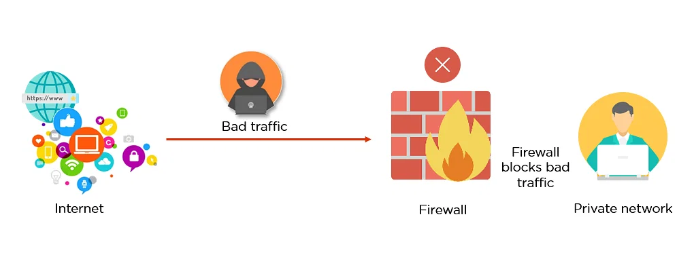

What is a Firewall?
A Firewall is a network security device that monitors and filters incoming and outgoing network traffic based on an organization’s previously established security policies. At its most basic, a firewall is essentially the barrier that sits between a private internal network and the public Internet. A firewall’s main purpose is to allow non-threatening traffic in and to keep dangerous traffic out.

Firewall History
Firewalls have existed since the late 1980’s and started out as packet filters, which were networks set up to examine packets, or bytes, transferred between computers. Though packet filtering firewalls are still in use today, firewalls have come a long way as technology has developed throughout the decades.
- Gen 1 Virus
- Firewalls have existed since the late 1980’s and started out as packet filters, which were networks set up to examine packets, or bytes, transferred between computers. Though packet filtering firewalls are still in use today, firewalls have come a long way as technology has developed throughout the decades.
- Gen 2 Networks
- Generation 2, Mid 1990’s, attacks from the internet affected all business and drove creation of the firewall.
- Gen 3 Applications
- Generation 3, Early 2000’s, exploiting vulnerabilities in applications which affected most businesses and drove Intrusion Prevention Systems Products (IPS).
- Gen 4 Payload
- Generation 4, Approx. 2010, rise of targeted, unknown, evasive, polymorphic attacks which affected most businesses and drove anti-bot and sandboxing products.
- Gen 5 Mega
- Generation 5, Approx. 2017, large scale, multi-vector, mega attacks using advance attack tools and is driving advance threat prevention solutions.